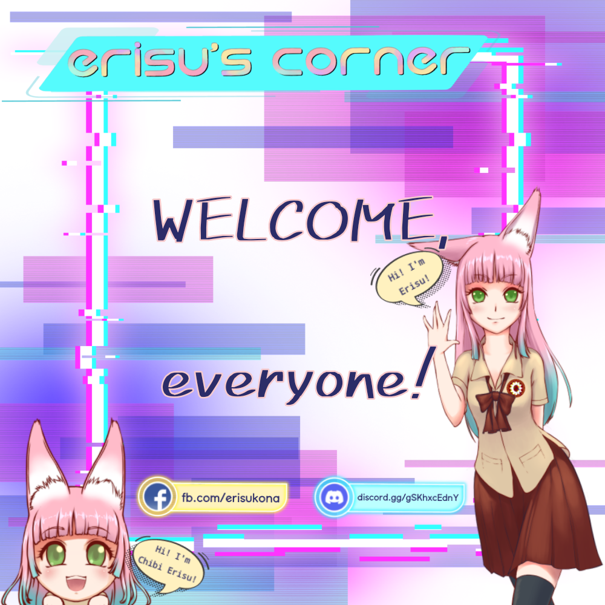

EARIST'S COOLEST ANIME CLUB!
エリス コーナ

discord.gg/gSKhxcEdny

fb.com/erisukona

Irrashaimase~!
Konnichiwa! And welcome to our blog! It’ll be our pleasure to deliver you some answers to your wonders.
First of all, what is Erisu’s Corner? Erisu’s Corner is a Filipino-Japanese youth-oriented, anime-centric organization. That’s right, an organization for EARIST students who loves anime! Fun, right?
“When I decided to establish this organization, I have one goal in mind, to continue a legacy of having a safe haven for weeaboos like me at school.”
Oftentimes, hobbyists like us are often shunned away by the majority of people (we call “normies”). And that leaves us with little to no friends at all who understands our interests at school. And thus we founded EARIST Anime Alley!... Continue Reading

ErisuFeaturesCentre
Here in Erisu’s Corner, we celebrate talented individuals.
Hence, we are launching Erisu’s Features Centre! Where we feature talents in all forms (art/cosplay/gaming/photography/collection, etc).
If you think you are qualified to be featured in our Facebook page and here in our blogsite, you are more than welcome to send us a message here: Erisu’s Corner.
Stay tuned for our features! Who knows, maybe one of the people who you look up to will be featured with us one day! #ErisuFeaturesCentre.
— K
Founder, Erisu’s Corner